Real-Time GPU Path Tracing
Video: https://cal-cs184-student.github.io/hw-webpages-alxdsptr/project/video.mp4
Slides: See on Google Slides
Code: https://github.com/alxdsptr/cs184_project
Note: If reading the PDF, please check the website to see animated GIFs / videos in some of the sections below!
Abstract
We have developed a general-purpose GPU path tracing framework from scratch, designed to handle complex scenes with real-time interactivity. It features both a native CUDA backend and an OptiX-based version that utilizes RT Cores for hardware acceleration. Our framework has an interactive GUI and can load any asset file, and it supports Cook-Torrance BRDFs, transmission for glass, and volumetric scattering. To ensure high-fidelity results at real-time frame rates, we integrated several variance reduction techniques, including Light BVH for Next Event Estimation (NEE) sampling, Multiple Importance Sampling (MIS) to combine NEE and BSDF sampling, and the ReSTIR (DI/GI/PT) family of algorithms. For final output refinement, we support three denoising modes: NRD, NRD + DLSS, and DLSS-RR.
Technical Approach
For our path tracing framework, we used Open Asset Import Library (assimp) to support different model formats and settled on using Vulkan for the dispay output pipeline. We added support for loading textures, including basic albedo textures, normal maps, and emissive textures. In the following sections, we skip the details on implementing the general GPU-based path tracer (ex. GPU data structures, BVH acceleration, etc.) and focus on some of the bigger, specific features we added to support complex scenes and real-time path tracing.
Next Event Estimation
When a scene contains a large number of emissive objects, iterating through every single light source during direct light sampling becomes prohibitively expensive; therefore, an efficient sampling method is required.
Initially, our implementation treated every emissive triangle as a separately sample-able light. At scene load, each such triangle is assigned a scalar weight \(w_t = \text{area}_t \cdot \bar{L}_t \cdot L(\text{albedo})\), where \(\bar{L}_t\) is the average linear luminance over the triangle's UV footprint in its emissive texture. These weights form a global CDF over all triangles: at sample time, we perform a binary search to pick a triangle, then randomly sample a point within it and use its emission as the result.
However, this approach is spatially blind: a shading point close to one lamp and far from another samples both at the same rate. Consequently, we further implemented a light BVH, which clusters emitters into a spatial hierarchy whose internal nodes cache total flux and a bounding volume. It samples top-down with child probabilities proportional to \(\Phi_c / d_c^2\). This concentrates shadow rays on nearby lights, providing far better PDFs at the same \(O(\log N)\) cost.
BSDF models
The kernel dispatches on two BSDF families based on material flags: Cook-Torrance (default PBR) and smooth dielectric (transmissive glass).
Cook-Torrance (metallic-roughness)
The default path for all modern PBR assets. The BRDF is
\[f_r(\omega_i,\omega_o) = \underbrace{(1-F)(1-\text{metallic}) \frac{\mathbf{c}}{\pi}}_{\text{diffuse}} \;+\; \underbrace{\frac{F \cdot D \cdot G}{4(\mathbf{n}\cdot\omega_i)(\mathbf{n}\cdot\omega_o)}}_{\text{specular}},\]
with GGX/Trowbridge-Reitz NDF \(D(\mathbf{h}) = \alpha^2 / \big(\pi((\mathbf{n}\cdot\mathbf{h})^2(\alpha^2-1)+1)^2\big)\) where \(\alpha = \text{roughness}^2\), Smith-GGX shadowing \(G = G_1(\omega_i) G_1(\omega_o)\) with \(G_1(\mathbf{v}) = 2(\mathbf{n}\cdot\mathbf{v}) / \big((\mathbf{n}\cdot\mathbf{v}) + \sqrt{\alpha^2 + (1-\alpha^2)(\mathbf{n}\cdot\mathbf{v})^2}\big)\), and Schlick Fresnel \(F = F_0 + (1-F_0)(1-\mathbf{h}\cdot\omega_o)^5\) with \(F_0 = \text{lerp}(0.04,\,\mathbf{c},\,\text{metallic})\).
Sampling uses a diffuse / specular lobe mixture. At each shading point we compute a Fresnel-weighted specular probability
\[p_\text{spec} = \text{clamp}\!\left(\frac{L(F)}{L(F) + L((1-F)(1-\text{metallic})\mathbf{c})},\,0.1,\,0.9\right),\]
draw \(\xi\), and either GGX-importance-sample a half-vector to reflect about (specular branch) or cosine-hemisphere sample (diffuse branch). The MIS-friendly combined pdf is \(p = p_\text{spec}\,p_\text{GGX} + (1-p_\text{spec})\,(\mathbf{n}\cdot\omega_o)/\pi\).
Smooth dielectric (glass)
We model transparent materials (glass, water) as smooth dielectric interfaces parameterised only by the index of refraction \(\eta\). At a hit point we stochastically choose reflection or refraction weighted by the Fresnel term.
Fresnel reflectance. For unpolarized light crossing a dielectric boundary with relative IOR \(\eta = \eta_i / \eta_t\), the reflected energy fraction is given by the exact Fresnel equations:
\[ F_r(\cos\theta_i) = \tfrac{1}{2}\left(r_\parallel^2 + r_\perp^2\right), \quad r_\parallel = \frac{\eta_t\cos\theta_i - \eta_i\cos\theta_t}{\eta_t\cos\theta_i + \eta_i\cos\theta_t}, \quad r_\perp = \frac{\eta_i\cos\theta_i - \eta_t\cos\theta_t}{\eta_i\cos\theta_i + \eta_t\cos\theta_t} \]
with \(\cos\theta_t\) obtained from Snell's law \(\eta_i\sin\theta_i = \eta_t\sin\theta_t\). If \(\sin^2\theta_t > 1\), total internal reflection occurs and \(F_r = 1\).
The sampling process is very straightforward: generate a random number, and if it is less than \(F_r\), the ray reflects; otherwise, it refracts according to Snell's law. If total internal reflection (TIR) occurs, it is forced to reflect.
\[ \omega_o = \begin{cases} \omega_i - 2(\omega_i \cdot \mathbf{n})\,\mathbf{n}, & \xi < F_r \\ \eta\,\omega_i + \left(\eta\cos\theta_i - \cos\theta_t\right)\mathbf{n}, & \text{otherwise} \end{cases} \]
Since such a perfectly smooth surface belongs to a Dirac-delta distribution, the \(\delta\) functions in the BSDF value and the sampling PDF cancel each other out exactly, making the throughput update very simple: you only need to multiply by the material's color. For tinted glass, we apply a simple Beer-Lambert absorption on the rays exiting the medium.
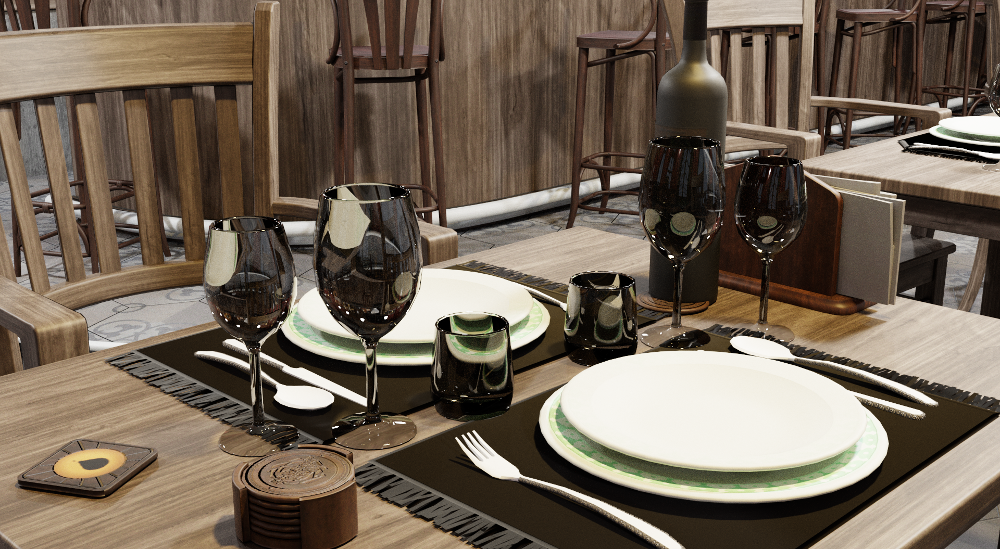
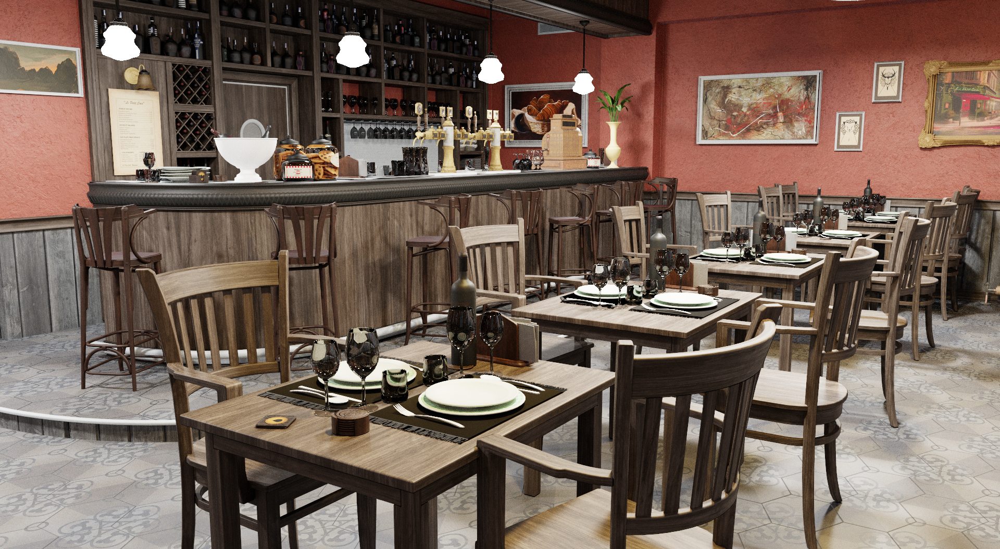
Volumetric Rendering
To render realistic atmospheric effects, we solve the Volume Rendering Equation along each camera ray:
\[L = T(s)L_{\text{surf}} + \int_0^s T(t)\sigma_s(t)L_s(t)dt\]
- Surface Term (\(T(s)L_{\text{surf}}\)): Light from the solid object behind the fog, dimmed by the transmittance \(T(s)\).
- In-scattering Term (\(\int \dots\)): The "glow" created by light hitting particles along the ray and bouncing toward the camera.
- Transmittance (\(T\)): The probability that light travels a distance \(t\) without being absorbed or scattered, defined by the Beer-Lambert law: \[T(t) = \exp\left(-\int_0^t \sigma_t(u)du\right)\] We support a constant base density plus an exponential height-fog (\(\sigma_t \propto \exp(-(y-y_0)/h)\)), meaning the fog thins out as altitude increases.
Null-Collision Framework (Novák et al. 2018)
Since the varying extinction coefficient \(\sigma_t\) prevents an analytical solution for Transmittance (\(T\)), we apply the unbiased null-collision framework. We define a majorant (\(\mu\))—a constant representing the volume's maximum density—and populate the density gaps with "fictitious" null particles. This creates a mathematically uniform medium, allowing for constant-rate sampling despite variable fog density:
- Delta Tracking (Sampling): Determines collision locations. We step along the ray using \(\Delta t = -\ln\xi/\mu\). A collision is "accepted" with probability \(\sigma_t/\mu\); if rejected, it is a "null collision," and the ray continues.
- Ratio Tracking (Transmittance): Estimates light attenuation for shadow rays. Rather than stopping at collisions, the intensity is scaled by \((1 - \sigma_t/\mu)\) at each step. The product of these ratios provides an unbiased estimate of total transmittance.
Scattering and Sun Shafts
At scatter events, the Henyey-Greenstein phase function determines the new light direction, using an anisotropy factor \(g\) to favor forward-scattering: \[p_{\text{HG}}(\cos\theta;g) = \frac{1-g^2}{4\pi(1+g^2+2g\cos\theta)^{3/2}}\] We use NEE and MIS to connect these points to lights. Sun shafts (God rays) emerge where Ratio Tracking confirms a clear path to the sun, while geometry creates the dark gaps between the beams.
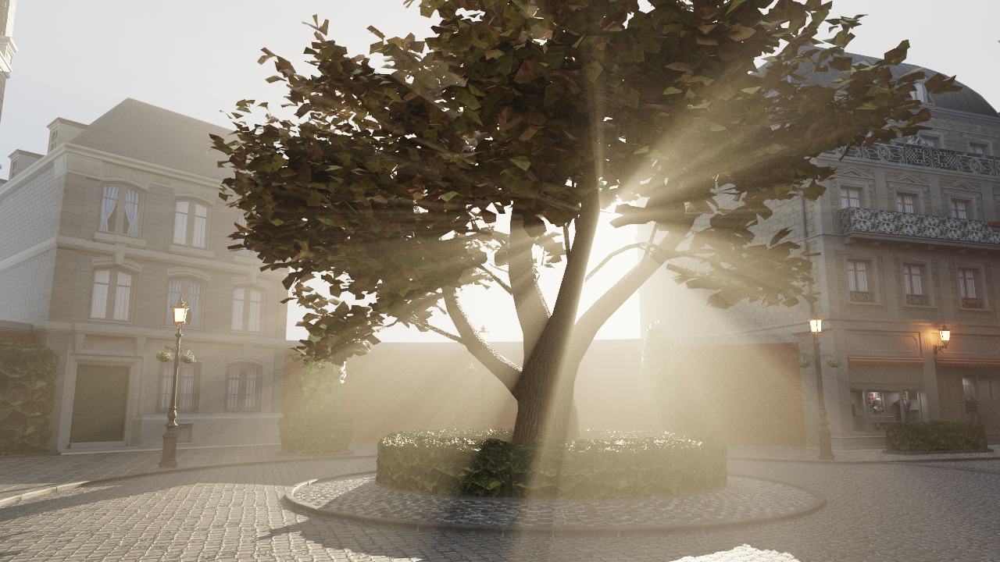
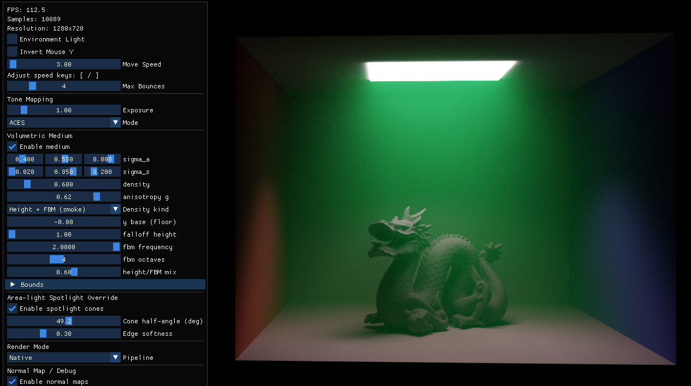
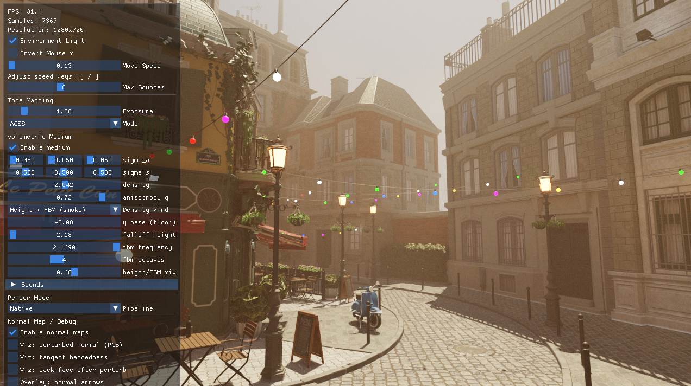
ReSTIR
Motivation
The goal of rendering is to compute the reflected radiance at each visible surface point. For direct lighting, this means evaluating an integral over all light-emitting surfaces:
$$L(y, \omega) = \int_A \rho(y, x) , L_e(x) , G(x \leftrightarrow y) , V(x \leftrightarrow y) , dA_x$$
where \(\rho\) is the BSDF, \(L_e\) is emitted radiance, \(G\) is a geometry term (inverse-square distance and cosine factors), and \(V\) is binary visibility. We abbreviate this as \(L = \int_A f(x),dx\).
Monte Carlo integration estimates this with \(N\) samples:
$$\langle L \rangle = \frac{1}{N} \sum_{i=1}^{N} \frac{f(x_i)}{p(x_i)}$$
Variance drops when \(p(x)\) closely matches \(f(x)\) — this is importance sampling. When several reasonable sampling strategies exist (e.g. sample proportional to the BSDF, or to the emitted light), Multiple Importance Sampling (MIS) combines them into a single low-variance estimator:
$$\langle L \rangle_\text{MIS} = \sum_s \frac{1}{N_s} \sum_{i=1}^{N_s} w_s(x_i) \frac{f(x_i)}{p_s(x_i)}$$
where the weights \(w_s\) form a partition of unity. This is the standard toolkit going into real-time rendering — but with millions of dynamic lights, even a good \(p\) is hard to construct cheaply.
What if we could sample from a target distribution \(\hat{p}(x) \propto f(x)\) that we can evaluate but not sample directly? RIS does this in two steps:
- Draw \(M\) candidate samples \(x_1, \ldots, x_M\) from a cheap source distribution \(p\).
- Randomly select one candidate \(y = x_z\) with probability proportional to the ratio \(w(x_i) = \hat{p}(x_i)/p(x_i)\).
The resulting estimator is:
$$\langle L \rangle_\text{RIS} = \frac{f(y)}{\hat{p}(y)} \cdot \frac{1}{M} \sum_{j=1}^{M} w(x_j)$$
As \(M \to \infty\), the distribution of \(y\) converges to \(\hat{p}\). In practice \(\hat{p}\) can be the unshadowed path contribution \(\rho \cdot L_e \cdot G\), which is cheap to evaluate — we only need to trace a shadow ray for the one surviving sample \(y\).
Streaming RIS via reservoir sampling: Storing all \(M\) candidates is impractical on a GPU. Fortunately, weighted reservoir sampling (WRS) lets us process candidates one at a time, keeping only the current winner in a small "reservoir" \((y, w_\text{sum}, M)\). Each new candidate \(x_i\) replaces \(y\) with probability \(w(x_i)/w_\text{sum}\). The result is mathematically identical to full RIS, but uses \(O(1)\) memory regardless of \(M\).
Spatiotemporal reuse: A key property of reservoirs is that they can be merged: the union of two reservoirs' input streams is simulated by treating each reservoir's winner as a fresh candidate with weight \(\hat{p}(y) \cdot W \cdot M\). This enables two powerful reuse strategies:
- Spatial reuse: each pixel combines its reservoir with those of \(k\) random spatial neighbors. Per-pixel cost is \(O(k + M)\), but the effective candidate count grows to \(k^n M\) after \(n\) iterations.
- Temporal reuse: the previous frame's reservoir is fed into the current frame, amortizing sample cost over time and dramatically reducing noise after just a few frames.
Together these form ReSTIR: Reservoir-based Spatiotemporal Importance Resampling.
ReSTIR DI
ReSTIR DI applies the above framework specifically to direct lighting from many emitters.
Initial candidates are drawn proportional to emitted power (\(p \propto L_e\)), and the target is the unshadowed contribution:
$$\hat{p}(x) = \rho(x) \cdot L_e(x) \cdot G(x)$$
Only after resampling is a shadow ray traced for the surviving sample — so the expensive visibility query is paid only once per pixel rather than \(M\) times.
The paper introduces a unbiased fix: Naively combining reservoirs from neighboring pixels is biased: a neighbor might have discarded a direction that would have been valid at the current pixel (e.g. due to differing surface normals or occlusion). The unbiased fix reweights by counting, for the chosen sample \(y\), how many of the \(M\) source distributions could actually have generated it.
However, for performance reasons we did not implement this unbiased correction, as it would require one additional shadow ray per spatial neighbor.
ReSTIR GI
ReSTIR GI extends the framework from only handling direct lighting to multi-bounce indirect illumination.
The core change is where samples live. Instead of sampling points on light surfaces, ReSTIR GI samples directions from each visible surface point and traces rays to find "sample points" \(x_s\) on scene geometry. At each sample point, the outgoing radiance \(\hat{L}_o(x_s)\) is estimated by path tracing. The target function becomes:
$$\hat{p} = L_o(x_s) \cdot f(\omega_o, \omega_i) \cdot \langle \cos\theta_i \rangle$$
or simply \(\hat{p} = L_o(x_s)\) for a simpler but still effective variant that generalizes better across neighbors.
The Jacobian correction: When a sample point \(x_s\) is reused from neighbor pixel \(q\) at pixel \(r\), the solid-angle PDF transforms differently between the two pixels. This requires a Jacobian correction during spatial reuse:
$$|J_{q \to r}| = \frac{|\cos\phi_2^r|}{|\cos\phi_2^q|} \cdot \frac{|x_1^q - x_2^q|^2}{|x_1^r - x_2^q|^2}$$
Ignoring this factor introduces lighting discontinuities. No such correction was needed in ReSTIR DI because light samples were drawn globally, independent of each pixel's local geometry.
ReSTIR PT
The reuse target is extended from a single secondary vertex to a full path. The reservoir layout is the same as in ReSTIR GI, but instead of storing a one-bounce indirect sample, it now stores a complete multi-bounce path suffix — traced with standard path tracing, with NEE at each vertex, up to 4 bounces plus Russian roulette termination. We refer to the first vertex of this suffix as the reconnection vertex \(\mathbf{x}_r\).
When the suffix is borrowed by another pixel \(r\), the segment from the new visible point to \(\mathbf{x}_r\) changes in length and incident direction, but the world-space path beyond \(\mathbf{x}_r\) remains entirely unchanged. This is the essence of the reconnection shift mapping: only the first segment is rewired, and the Jacobian correction accounts for the change in solid angle.
Shift mappings. To reuse a path traced at pixel \(q\) for pixel \(r\), we need to map it to a valid path in pixel \(r\)'s domain. ReSTIR PT supports two strategies:
- Reconnection shift: directly set the first indirect vertex of the offset path to \(\mathbf{x}_r\), hard-connecting the new visible point to the stored reconnection vertex and keeping the rest of the path unchanged. Simple and cheap, works well for rough and diffuse surfaces.
- Hybrid shift (random replay + reconnection): replay the base path's random numbers up to the first sufficiently rough vertex before reconnecting. This handles glossy and specular materials more gracefully, where a direct hard reconnection would produce near-zero contribution.
Engineering trade-off. For simplicity, we only implement the reconnection shift — both the base and offset paths use a hard connection on the \(\mathbf{q} \to \mathbf{x}_r\) segment. The hybrid shift is not implemented. This means paths involving fully specular or glass chains cannot be meaningfully reused: their reconnection would land on a near-delta BSDF lobe, producing a contribution that is essentially zero at the offset pixel. To handle this gracefully, we apply a roughness gate — reconnection is only permitted when the GGX roughness \(\alpha \geq 0.2\) at the reconnection vertex. Paths that fail this test are discarded early rather than being allowed to pollute the reservoir with near-zero-weight samples. The practical consequence is that in scenes dominated by metal-glass combinations, ReSTIR PT degrades to standard path tracing. However, such scenes are rare in our test suite, so this limitation has little impact on overall results.
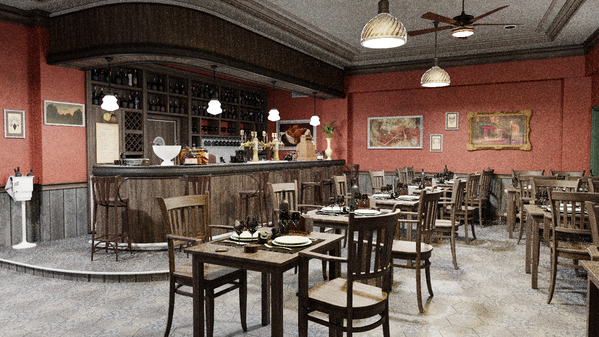
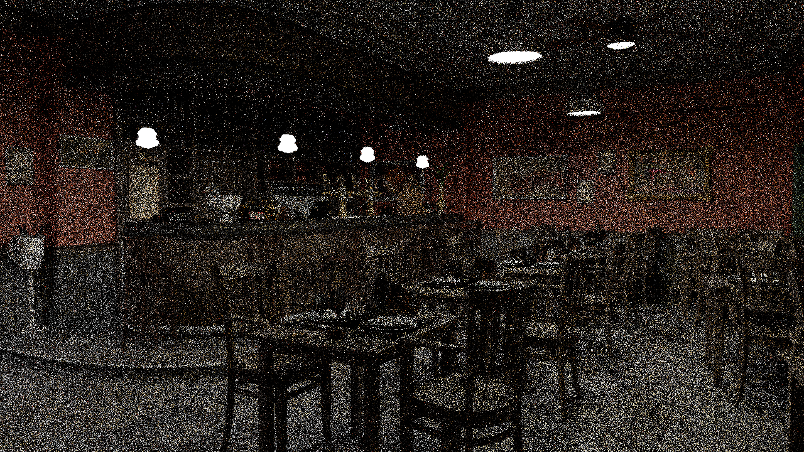
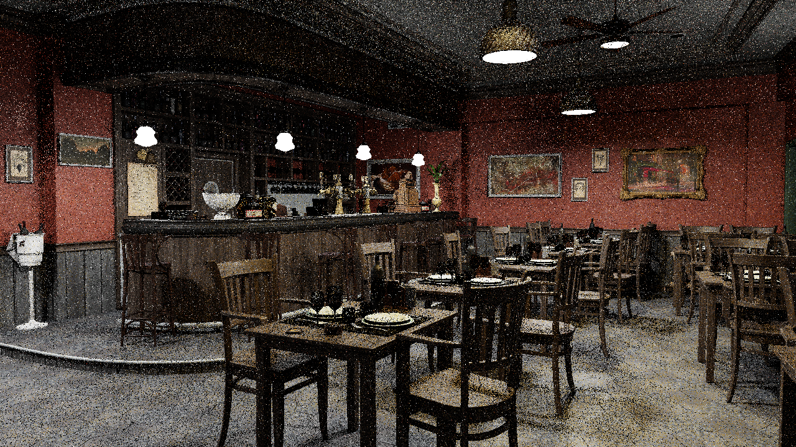
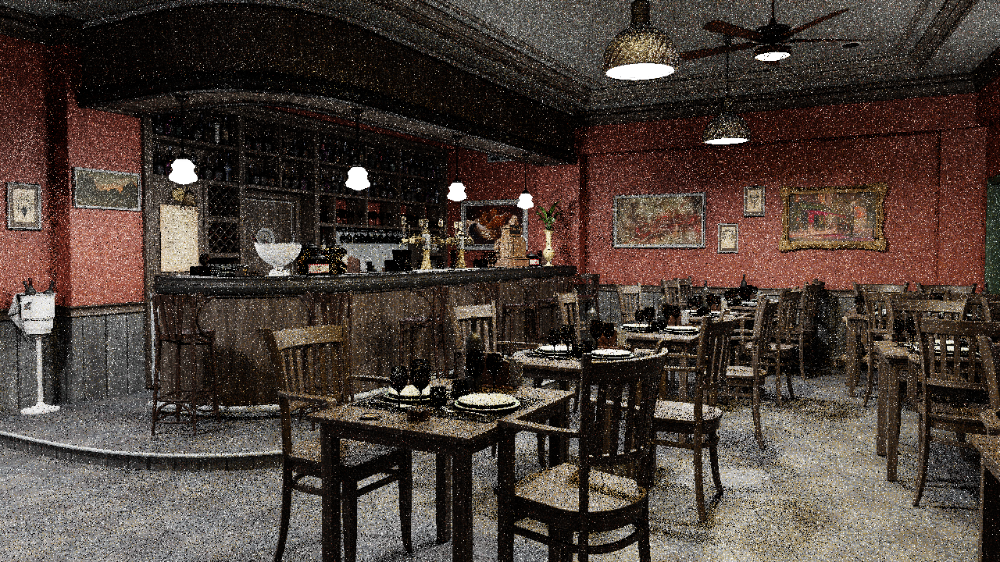
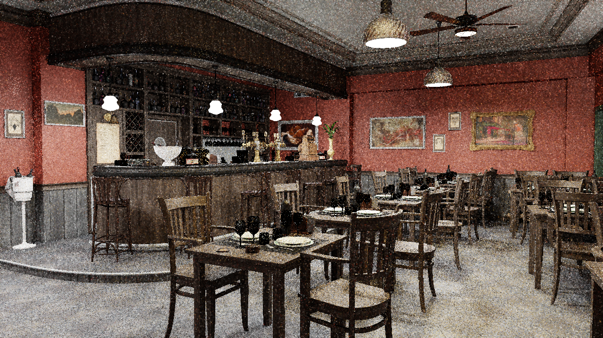
OptiX, NRD, and DLSS Integration
To use RT cores instead of CUDA cores for ray tracing, we integrated OptiX. This required compiling our path-tracing kernels as OptiX raygen / closest-hit / miss / any-hit programs, building a hardware BVH (GAS) over the scene, and setting up a Shader Binding Table that selects the right raygen entry per render mode.
Even with all the variance-reduction work above, a 1-spp image is still very noisy, so we plug in NRD as a post-render denoiser. NRD does not just take the final color: it requires us to emit a richer G-buffer per frame - diffuse and specular radiance demodulated by their albedos (RGBA16F), per-pixel hit distance, view-space linear Z (R32F), world-space normal + roughness (RGBA8), and pixel-space motion vectors (RG16F). Composing these correctly (and re-multiplying albedo back in afterwards) is most of the work.
To push performance further we add DLSS: render at a lower internal resolution (e.g. 742x418) and let a neural network upsample to 1280x720, leveraging Tensor cores. DLSS-SR needs HDR color, NDC depth (post-perspective, not the linear viewZ NRD wants - they share a G-buffer slot but not encoding), motion vectors, and a Halton jitter offset on the camera. DLSS-RR replaces NRD entirely and additionally needs world normals in floating point, diffuse and specular albedo, and the specular hit distance from the primary surface to the first indirect bounce.
Even though all three SDKs are pre-written by NVIDIA, getting them to behave together took a long debugging cycle: encoding mismatches between NRD and DLSS, the wrong depth type fed to DLSS-RR, double-jittering when NRD and DLSS-SR are chained, history not resetting on scene reloads, etc. After many iterations things finally line up, but some subtle issues likely remain unresolved.
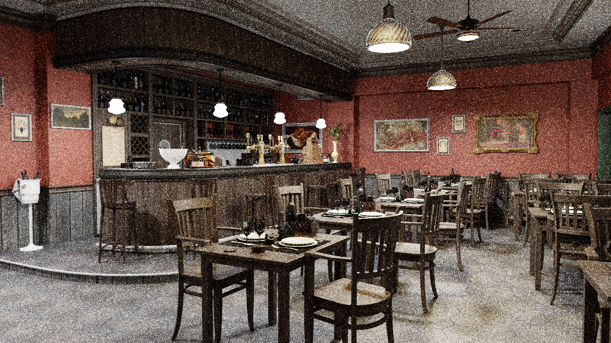
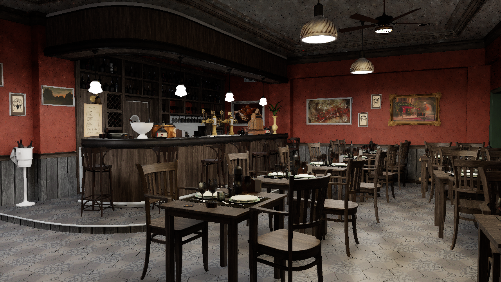
Performance
Here is the render FPS & speedup with 1 sample/pixel/frame @ 1280x720p on an Nvidia 4070 laptop GPU:
| Scene | CUDA | CUDA + DLSS | OptiX | OptiX + DLSS |
| CBbunny.dae | 176 | 239 | 236 | 240+ (max'd) |
| Bistro Interior | 8.5 | 23 | 96 | 186 |
| Measure Seven: Colored Lights | 14.4 | 38 | 126 | 209 |
| Bistro Exterior | 13.8 | 37 | 149 | 240 |
Final Results
Please see these clips:
Appendix
References:-
Spatiotemporal Reservoir Resampling (ReSTIR)
Bitterli, B., et al. (2020). Spatiotemporal reservoir resampling for real-time ray tracing with dynamic direct lighting. ACM Transactions on Graphics (SIGGRAPH). Link -
ReSTIR GI
Ouyang, J., et al. (2021). ReSTIR GI: Path resampling for real-time path tracing. Computer Graphics and Interactive Techniques. Link -
Generalized RIS (GRIS)
Lin, D., et al. (2022). Generalized Resampled Importance Sampling: Foundations of ReSTIR. ACM Transactions on Graphics (SIGGRAPH). Link -
ReSTIR PT Enhanced
Lin, D., et al. (2026). ReSTIR PT Enhanced: Algorithmic advances for faster and more robust ReSTIR path tracing. NVIDIA Research. Link -
Volumetric Light Transport
Novák, J., Georgiev, I., Hanika, J., & Jarosz, W. (2018). Monte Carlo methods for volumetric light transport simulation. Computer Graphics Forum. Link
- Ruoyu: Did the largest chunk of the work! Most of the implementation: created the framework, set up basic path tracer with CUDA & OptiX, implemented ReSTIR, etc.
- Madhav: Wrote proposal, made milestone video, and made report website. Implemented directional lighting, spotlights, and volumetric fog in new framework, and fixed some bugs. Did initial experimentation & animations with hw3 codebase before we created our own framework, and set up GPU/OpenGL access for others over SSH.
- Sarah: Helped with proposal.